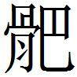

齊六
齊負郭之民有孤狐咺者
齊負〔一〕 郭之民有孤狐咺者〔二〕 ，正議閔王，斮之檀衢〔三〕 ，百姓不附。齊孫室子〔四〕 陳舉直言，殺之東閭，宗族離心。司馬穰苴為政者也〔五〕 ，殺之，大臣不親。以故燕舉兵，使昌國君〔六〕 將而擊之。齊使向子〔七〕 將而應〔八〕 之。齊軍破，向子以〔九〕 輿一乘亡。達子收餘卒，復振，與燕戰，求所以償〔一〇〕 者，閔王不肯與，軍破走。
〔一〕 鮑本 負，猶背。
〔二〕 姚本續 云：古今人表 ，狐爰。師古曰，即狐咺也，齊人，見戰國策 。鮑本 補曰：孤狐咺，「孤」因「狐」字誤衍，大事記 去之。呂氏春秋·貴直論狐援 云云，即謂此正議也。古今人表 作狐爰。札记 今本「咺」誤「喧」。丕烈案：咺、援、爰，皆聲之轉也。
〔三〕 鮑本 斮，斬也。檀衢，蓋齊巿名。
〔四〕 鮑本 公孫家子，猶宗室云。
〔五〕 姚本續 云：子由古史 以此為閔王時事，刪史記·穰苴傳 。通鑑 全引此段，不入穰苴事。鮑本 田完之裔，為景公將，去此時遠甚，蓋誤其名。正曰：大事記 引蘇氏，謂史稱齊景公時，晉伐阿鄄，燕侵河上，晏子薦穰苴斬監軍莊賈，因以成功。春秋 左氏 無此事，意穰苴嘗為閔王卻燕、晉，而戰國雜記妄以為景公時。
〔六〕 鮑本 樂毅，魏樂羊之後。
〔七〕 鮑本 及下達子，史 不書。補曰：呂氏春秋 作觸子。
〔八〕 鮑本 後起為應。
〔九〕 鮑本 無「以」字。
〔一〇〕 鮑本 「償」作「賞」。補曰：呂氏春秋 作「賞」。札记 今本「償」作「賞」，乃誤涉鮑也。丕烈案：此以「償」為「賞」字耳，不當輒改。
王奔莒〔一〕 ，淖齒數之曰：「夫千乘〔二〕 、博昌之間〔三〕 ，方數百里，雨血沾衣，王知之乎？」王曰：「不知。」「嬴、博〔四〕 之間，地坼至泉，王知之乎？」王曰：「不知。」「人有當闕〔五〕 而哭者，求之則不得，去之則聞其聲，王知之乎？」王曰：「不知〔六〕 。」淖齒曰：「天雨血沾衣者，天以告也；地坼至泉者，地以告也；人有當闕而哭者，人以告也。天地人皆以告矣，而王不知戒焉，何得無誅乎？」於是殺閔王於鼓里〔七〕 。
〔一〕 鮑本 此四十年。正曰：三十年。
〔二〕 鮑本 青州郡。
〔三〕 鮑本 屬千乘。
〔四〕 鮑本 二縣屬太山。補曰：禮·檀弓 注，今泰山縣。
〔五〕 鮑本 闕，門觀。
〔六〕 鮑本 補曰：三「不知」字，春秋後語 皆作「知之」。通鑑 從之。
〔七〕 鮑本 莒中里也。
太子〔一〕 乃解衣免服，逃太史之家為溉園〔二〕 。君王后，太史氏女〔三〕 ，知其貴人，善事之。田單以即墨之城，破亡餘卒，破燕兵，紿騎劫〔四〕 ，遂以復齊〔五〕 ，遽迎太子於莒，立之以為王〔六〕 。襄王即位〔七〕 ，君王后以為后，生齊王建。〔八〕
〔一〕 鮑本 名法章，是為襄王。
〔二〕 鮑本 溉，灌注。
〔三〕 鮑本 「氏」上有「后」字。「后」，姓也。以其姓「后」，不可曰「后后」，故曰「君王后」也。正曰：姚本 作「太史氏女」，無「后」字。後策正云「太史氏」。
〔四〕 鮑本 紿，敗也。劫，燕將，代樂毅者。毅傳 言，單設詐誑燕軍。
〔五〕 鮑本 襄五年。
〔六〕 鮑本 時立五年矣，迎而立之齊耳。
〔七〕 姚本 一作「立」。鮑本 「位」下有「立」字。補曰：「位」下有缺字。
〔八〕 鮑本 補曰：「雨」，音預；「為溉」之「為」，去聲。
王孫賈年十五事閔王
王孫賈年十五，事閔王。王出走，失王之處。其母曰：「女朝出而晚來，則吾倚門而望；女暮出而不還，則吾倚閭而望。女今事王，王出走，女不知其處，女尚何歸〔一〕 ？」
〔一〕 鮑本 責其親王不如我之親女。
王孫賈乃〔一〕 入市中，曰：「淖齒亂齊國，殺閔王〔二〕 ，欲與我誅者，袒右〔三〕 ！」市人從者四百人，與之誅淖齒，刺而殺之。〔四〕
〔一〕 姚本 一本添「反」字。
〔二〕 鮑本 無「閔」字。正曰：追書之辭。
〔三〕 鮑本 右肩。
〔四〕 鮑本 補曰：袒，蕩旱反，今循習作徒案反。說文 ，裼也。露臂。
燕攻齊取七十餘城
燕攻齊，取七十餘城，唯莒、即墨不下〔一〕 。齊田單以即墨破燕，殺騎劫。
〔一〕 鮑本 「不」作「未」。
初，燕將〔一〕 攻下聊城〔二〕 ，人或讒之〔三〕 。燕將懼誅，遂保守聊城，不敢歸。田單攻之歲餘，士卒多死，而聊城不下。
〔一〕 鮑本 史 亦不名。
〔二〕 鮑本 屬東郡。高紀 注，在平原。正曰：括地志 云，故聊城在博州聊城縣西。
〔三〕 姚本 三同。集無此「初燕將攻下聊城人或讒之」十一字。史記 有。鮑本 補曰：姚氏曰，三同，集無「初燕」止「讒之」十一字，則知此章首有誤脫。正曰：自「燕攻齊」止「殺騎劫」二十五字，或他策脫簡。而「初燕將」止「讒之」十一字，亦他本所無也。札记 丕烈案：史記 無「燕攻齊」至「殺騎劫」，有「燕將攻下聊城，人或讒之」，當是。策 文本與史記 不同，校者以史記 文記其異同，遂羼入也。吳所說甚詳，然仍多不可通者，不若衍其羼入，餘均依舊，以存策 文與史記 之異說。
魯連乃書〔一〕 ，約之矢〔二〕 以射城中，遺燕將曰：「吾聞之，智者不倍〔三〕 時而棄利，勇士不怯〔四〕 死而滅名，忠臣不先身而後君。今公行一朝之〔五〕 忿，不顧燕王〔六〕 之無臣，非忠也；殺身亡聊城，而威不信於齊，非勇也；功廢名滅，後世無稱，非知也。故知者不再計，勇士不怯死〔七〕 。今死生榮辱，尊卑貴賤，此其一時也〔八〕 。願公之詳計而無與俗同也。且楚攻南陽〔九〕 ，魏攻平陸〔一〇〕 ，齊無南面之心〔一一〕 ，以為亡南陽之害，不若得濟北之利，故定計而堅守之。今秦人下兵〔一二〕 ，魏不敢東面〔一三〕 ，橫秦之勢合〔一四〕 ，則楚國之形危。且〔一五〕 棄南陽，斷右壤〔一六〕 ，存濟北，計必為之。今楚、魏交退〔一七〕 ，燕救不至〔一八〕 ，齊無天下之規〔一九〕 ，與聊城共據〔二〇〕 期年之弊，即臣見公之不能得〔二一〕 也。齊必決之於聊城，公無再計。彼燕國大亂，君臣過計〔二二〕 ，上下迷惑，栗腹〔二三〕 以百萬〔二四〕 之眾，五折於外，萬乘之國，被圍於趙，壤削主困，為天下戮〔二五〕 ，公聞之乎？今燕王方寒心獨立，大臣不足恃，國弊多，民心無所歸。今公又以弊聊〔二六〕 之民，距全齊之兵〔二七〕 ，期年不解，是墨翟之守也〔二八〕 ；食人炊骨，士無反北之心，是孫臏、吳起之兵也。能以〔二九〕 見於天下矣！
〔一〕 鮑本 「書」上補「為」字。札记 今本「書」上有「為」字，乃誤涉鮑也。丕烈案：史記 有。
〔二〕 鮑本 纏束書於矢上。
〔三〕 鮑本 倍，背同。
〔四〕 鮑本 補曰：史記 作「卻」。札记 丕烈案：單本索隱 是「卻」字，王震澤本是「怯」字。
〔五〕 姚本 一作「亡」。
〔六〕 鮑本 惠王。
〔七〕 姚本 錢、劉，「勇士不再劫」。鮑本 補曰：一本云，晁本無此「故智者不再計，勇士不怯死」二句，而云「此三者，世主不臣，說士不載」。札记 丕烈案：史記 作「三者，世主不臣，說士不載，故智者不再計，勇士不怯死」。
〔八〕 鮑本 此釋上「不再計」，故史 云「時不再至」。
〔九〕 鮑本 史 云，「齊之南陽」。然則此荊州郡，時屬齊。補曰：索隱 云，「南陽即齊淮北、泗上之地也」。
〔一〇〕 鮑本 補曰：平陸，見前。
〔一一〕 鮑本 楚、魏在齊之南，齊有燕難，不急此二縣，故不南面與爭。補曰：正義 云，「齊無南面攻楚、魏之心，以為南陽、平陸之害小，不如聊城之利大」。
〔一二〕 鮑本 此時齊善秦，故下兵救之。
〔一三〕 鮑本 不攻齊也。
〔一四〕 鮑本 齊善秦為橫。
〔一五〕 姚本 一本添「齊」字。
〔一六〕 鮑本 謂平陸。斷亦棄也。
〔一七〕 鮑本 言其皆退。
〔一八〕 鮑本 不救聊城。
〔一九〕 鮑本 規，猶謀也。秦救之，而楚、魏退，無謀齊者。
〔二〇〕 鮑本 據，相持也。
〔二一〕 姚本 錢、劉一作「待」。鮑本 不能勝齊。
〔二二〕 鮑本 過，猶失。
〔二三〕 鮑本 燕將。
〔二四〕 鮑本 「百」作「十」。札记 丕烈案：史記 作「十」。
〔二五〕 鮑本 按：燕王喜四年，趙孝成十五年，廉頗圍破燕，殺栗腹，在齊襄、燕惠聊城事二十八年。以為此時，則自騎劫敗死外，不書他將及趙國也。正曰：說見章末詳之。
〔二六〕 鮑本 「弊聊」作「聊城」。補曰：一本以「敝聊」。札记 丕烈案：史記 作「敝聊」。
〔二七〕 鮑本 距，拒同，捍也。
〔二八〕 鮑本 墨子 曰，「公輸般為雲梯，將以攻宋。墨子聞之，見般，以帶為城，以牒為械。般九設機變，墨九距之。般之械盡，墨之守固有餘」。
〔二九〕 鮑本 「以」作「已」。札记 丕烈案：史記 無此字。
「故為公計者〔一〕 ，不如罷兵休士，全車甲，歸報燕王，燕王〔二〕 必喜。士民見公，如見父母，交游攘臂而議於世〔三〕 ，功業可明矣。上輔孤主，以制群臣；下養百姓，以資說士〔四〕 。矯國革俗於天下〔五〕 ，功名可立也。意者〔六〕 ，亦捐〔七〕 燕棄世，東游於齊乎？請裂地定封，富比陶、衛〔八〕 ，世世稱孤寡〔九〕 ，與齊久存〔一〇〕 ，此亦一計也。二者顯名厚實也，願公熟計而審處一也〔一一〕 。
〔一〕 鮑本 無「者」字。札记 丕烈案：史記 有。
〔二〕 姚本 三本同一「燕王」字。
〔三〕 鮑本 攘，言推臂前也。正曰：漢書·鄒陽傳 「攘袂」，顏云：「猶今人言將臂」。按，「攘臂」字見孟子 ，即此義。
〔四〕 鮑本 辯說之士，資以藉口。正曰：資給說士。
〔五〕 鮑本 矯革，言變其國俗。
〔六〕 姚本 曾無「意者」字，史記 有。
〔七〕 鮑本 捐亦棄。
〔八〕 姚本續 ：延篤注戰國策 云，陶，陶朱公也；衛，衛公子荊也。非也。王邵曰，魏冉封陶，商君姓衛。富比陶、衛，謂此。鮑本 陶，穰侯邑。衛，自梁襄王後稱君。正曰：索隱 引延篤云，陶，陶朱；衛，衛公子荊。非也。
〔九〕 姚本 錢作「寡人」。鮑本 無「孤」字。補曰：一本「稱孤寡」。札记 丕烈案：史記 無「寡」字。
〔一〇〕 姚本 劉作「左齊據右」。
〔一一〕 鮑本 補曰：下無歷數之辭，疑「一」字訛或衍。札记 丕烈案：吳誤讀也，指上所云「二者」。史記 作「而審處一焉」，可證。
「且吾聞，傚小節者不能行大威，惡小恥者不能立榮名。昔管仲射桓公中鉤，篡也；遺〔一〕 公子糾而不能死，怯也；束縛桎桔〔二〕 ，辱身也。此三行者，鄉里不通也，世主不臣也。使管仲終窮抑，〔三〕 幽囚而不出，慚恥而不見，窮年沒壽，不免為辱人賤行矣。然而〔四〕 管子 并〔五〕 三行之過，據齊國之政，一匡天下，九合諸侯，為五伯首，名高天下，光照鄰國。曹沫為魯君將，三戰三北，而喪地千里。使曹子之足不離陳，計不顧後，出必死而不生〔六〕 ，則不免為敗軍禽將。曹子以敗軍禽將，非勇也；功廢名滅，後世無稱，非知也。故去三北之恥，退而與魯君計也，曹子〔七〕 以為遭〔八〕 。齊桓公有天下，朝諸侯〔九〕 。曹子以一劍之任，劫桓公於壇位之上，顏色不變，而辭氣不悖。三戰之所喪，一朝而反之，天下震動〔一〇〕 驚駭，威信吳、楚，傳名後世。若此二公者，非不能行小節，死小恥也，以為殺身絕世，功名不立，非知也。故去忿恚〔一一〕 之心，而成終身之名；除感忿之恥，而立累世之功。故業與三王爭流，名與天壤相敝也〔一二〕 。公其圖之！」
〔一〕 鮑本 遺，忘也。
〔二〕 鮑本 「桔」作「梏」。桎，足械；梏，手械。札记 今本「桔」誤「梧」。鮑本 作「梏」。
〔三〕 鮑本 抑，按也。人所按，故為困。
〔四〕 鮑本 無「而」字。
〔五〕 鮑本 補曰：一本云「并」，晁作「棄」。札记 丕烈案：史記 作「兼」。
〔六〕 鮑本 出，計所出也。
〔七〕 姚本 曾無「也曹子」三字。
〔八〕 鮑本 正曰：「遭」字句。謂曹沫忍恥，而與魯君計，以為遭遇也。史 無此句則尤明。
〔九〕 鮑本 此霸者之事。欲興霸則可責以義，故沫與魯君計言此。正曰：說見上。補曰：「有天下」，「有」字恐誤。史 作「朝天下，會諸侯」。「朝天下」，謂率天下朝王也。
〔一〇〕 姚本續 ：別本有「諸侯」二字。
〔一一〕 鮑本 恚，恨也。
〔一二〕 鮑本 言天壤敝，此名乃敝。
燕將曰：「敬聞命矣！」因罷兵到讀〔一〕 而去。故解齊國之圍，救百姓之死，仲連之說也〔二〕 。
〔一〕 鮑本 「到讀」作「倒韣」。韣，弓衣。倒，示無弓。正曰：未詳，或誤字衍文。札记 今本「讀」作「櫝」。丕烈案：鮑改、吳補皆非也。「到」即「倒」字，又以「讀」為「櫝」字耳。不當輒改。
〔二〕 鮑本 仲連傳 有。彪按：此書以齊閔為宣王，蘇代為蘇秦，事時不合如此者甚眾，得為後人傳錄之誤？至於此章引栗腹之事說聊城之將，則非後人謬矣。蓋好事者聞約矢之說，惜其書不存，擬為之以補亡；而其人意氣橫溢，肆筆而成，不暇檢校細處。太史公亦愛其千里，而略其牝牡驪黃。至于今二千歲，莫有知其非者也！又按：燕昭二十八年，書齊之不下者，惟聊、莒、即墨。聊即聊城也。徐廣注，此栗腹事去長平十年，而不論其在聊城事後。蘇氏古史 亦因之疏矣。故備論之。正曰：魯仲連說燕將下聊城，史不著年。其書引栗腹之敗，此事在其後，故通鑑 、大事記 載於秦孝文元年，當燕王喜五年，齊王建十五年。自赧王三十一年，燕率五國伐齊，閔王死，襄王立；三十六年，燕昭王卒；明年，惠王立。越武成王、孝王而至王喜，凡三十四年。此蓋二事誤亂為一。自「燕攻齊」止「殺騎劫」二十五字，或他策脫簡；而「初燕將」止「讒之」十一字，亦他本所無也。且單由即墨起七十餘城，即復為齊，不聞聊城尚為燕守。以齊之事勢，豈有舍之三十餘年而不攻，單之兵力，三十餘年而不能下歟？今曰「攻之歲餘不下」，可見為此時燕將守聊城事也。史 稱，毅破齊不下者，獨莒、即墨；單縱反間，亦言二城。而燕世家 書聊、莒、即墨，策 亦有三城不下之言，果一時事，則聊城亦為齊守，而非燕將為燕守者。此誤因聊城不下，而引與莒、即墨亂也。考之單傳 ，自復齊之後，無可書之事。齊襄王十九年，當趙孝成王元年，趙割地求單為將；次年遂相趙，必不復返齊矣。距聊城之役，凡十六年，單豈得復為齊將哉？此因「歲餘不下」之言，聊、莒、即墨之混，而誤指以為單也。夫仲連之言，正謂栗腹敗，燕國亂，聊城孤守，齊方併攻，勢將必拔。其言初不涉湣、襄、昭、惠之際。所謂「楚攻南陽，魏攻平陸」，閔王時，楚取淮北，單復齊後，蓋已復之，不聞楚、魏交攻之事，二事必在後也。燕將被讒懼誅，連書亦無此意，此因樂毅而訛也。史 又稱，燕將得書自殺，單遂屠聊城，尤非事實。齊前所殺燕將，惟騎劫爾，不聞其他，此因騎劫而訛也。連之大意，在於罷兵息民。而其料事之明，勸以歸燕降齊，亦度其計之必可者。排難解紛，又素所蓄積也！迫之於窮，而致之於死，豈其心哉？夫其勸之，正將以全聊城之民，而忍坐視屠之哉！燕將死，聊城屠，連何功美之稱，而齊欲爵之哉？策所云解兵而去者，當得其實，而史不可信也。故論此事者，一考之仲連之書，則史 、策 之舛誤殽混者，皆可得而明矣。鮑不此之察，見其不通，遂謂好事者聞約矢之說，惜其書不存，擬之以補亡，二千餘年，莫有覺者，何其謬哉？史誤因策，通鑑 、大事記 稱田單誤因史。真文忠公反據鮑氏為斷，而謂魯連之說不可為訓，皆失考也。
燕攻齊齊破
燕攻齊，齊破。閔王奔莒，淖齒殺閔王。田單守即墨之城，破燕兵，復齊墟。襄王為太子徵〔一〕 。齊以〔二〕 破燕，田單之立疑，〔三〕 齊國之眾，皆以田單為自立也。襄王立，田單相之。
〔一〕 鮑本 徵，猶信也。太子初易姓名為庸，人疑之，至是始有狀可信也。
〔二〕 鮑本 「以」作「已」。
〔三〕 鮑本 人疑單也。
過菑〔一〕 水，有老人涉菑〔二〕 而寒，出不能行，坐於沙中。田單見其寒，欲使後車分〔三〕 衣，無可以分者，單解裘而衣之。襄王惡之，曰：「田單之施，將欲以取我國乎？不早圖〔四〕 ，恐後之〔五〕 。」左右顧無人，巖下〔六〕 有貫珠者〔七〕 ，襄王呼而問之曰：「女聞吾言乎？」對曰：「聞之。」王曰：「女以為何若？」對曰：「王不如因以為己善。王〔八〕 嘉單之善，下令曰：『寡人憂民之饑也，單收而食之；寡人憂民之寒也，單解裘而衣之；寡人憂勞百姓，而單亦憂之，稱寡人之意〔九〕 。』單有是善而王嘉之，善單之善，亦王之善已〔一〇〕 」王曰：「善！」乃賜單牛酒，嘉其行。
〔一〕 鮑本 菑，淄同。
〔二〕 姚本 曾一作「菑水」。
〔三〕 姚本 一本下有「之」字。
〔四〕 鮑本 「圖」下有「之」字。
〔五〕 鮑本 恐單先發。
〔六〕 姚本續 ：別本「巖」字作「聲」，句絕。通鑑 作「巖下」。
〔七〕 姚本續 ：元和姓纂 引戰國策 ，「齊有貫殊」。則貫姓殊名，非貫珠者。鮑本 齊人。
〔八〕 姚本 劉，「曰：奈何？曰」。
〔九〕 鮑本 稱，猶副。
〔一〇〕 札记 今本「已」誤「也」。
後數日，貫珠者復見王曰：「王至朝日，宜召田單而揖之於庭，口勞之。乃布令求百姓之"饑寒者，收穀〔一〕 之。」乃使人聽於閭里，聞丈夫之相□與語，舉□□□□曰〔二〕 ：「田單之愛人！嗟，乃王之教澤也！」〔三〕
〔一〕 鮑本 穀，猶養。
〔二〕 姚本 「相」下空一字，「舉」下空四字。鮑本 「舉」字在「與」字上。補曰：此因「與」字誤衍在此，姚本在「曰」字上。札记 今本不空，鮑本不空。丕烈案：所空，疑本有姚氏校語而刪去者。
〔三〕 鮑本 彪謂：單之取疑，所謂威震主者歟？襄王亦不明甚矣！使單有異志，闔城陽而王，孰敢不聽，豈俟今日哉？貫珠者，可謂君子人矣！為是言也，上足以掩王之非，下足以救單之死，一言而齊國定。君子哉！補曰：斯人者，又能免其身。不然，王懼其以前言告單，必殺之矣。
貂勃常惡田單
貂勃〔一〕 常惡田單，曰：「安平〔二〕 君，小人也。」安平君聞之，故為酒而召貂勃，曰：「單何以得罪於先生，故常見譽〔三〕 於朝〔四〕 ？」貂勃曰：「跖之狗吠堯〔五〕 ，非貴跖而賤堯也，狗固吠非其主也。且今使公孫子賢，而徐子不肖。然而使公孫子與徐子鬥，徐子之狗，猶時〔六〕 攫公孫子之腓〔七〕 而噬之也〔八〕 。若乃得去不肖者，而為賢者狗，豈特攫其腓而噬之耳哉？」安平君曰：「敬聞命。」明日，任之於王〔九〕 。
〔一〕 鮑本 貂勃，齊人。
〔二〕 鮑本 補曰：徐廣云，此海東安平。正義 云，在青州臨淄縣東，古紀國之酅邑。索隱 云，單初起安平，故以為號。
〔三〕 姚本 曾一作「惡」。
〔四〕 鮑本 不欲正言其毀。
〔五〕 鮑本 跖，柳下季之弟盜跖。正曰：此莊生寓言，惠、跖時不相及。蒯通之言出於此。
〔六〕 鮑本 「猶」作「由」，「時」作「將」。補曰：「由」，「猶」通。一本作「猶」。
〔七〕 姚本 錢、劉一作「

」。〔八〕 鮑本 攫，持。腓，脛腨。噬，啗也。正曰：噬，齧也。
〔九〕 鮑本 白王使任用之。
王有所幸臣九人之屬，欲傷安平君，相與語於王曰：「燕之伐齊之時，楚王〔一〕 使將軍〔二〕 將萬人而佐齊。今國已定，而社稷已安矣，何不使使者謝於楚王？」王曰：「左右孰可？」九人之屬曰：「貂勃可〔三〕 。」貂勃使楚。楚王受而觴之，數日不反。九人之屬相與語於王曰：「夫一人〔四〕 身，而牽留萬乘者，豈不以據勢也哉〔五〕 ？且安平君之與王也，君臣無禮〔六〕 ，而上下無別。且其志欲為不善〔七〕 。內牧〔八〕 百姓，循撫其心，振〔九〕 窮補不足，布德於民；外懷戎翟、天下之賢士〔一〇〕 ，陰結諸侯之雄俊豪英。〔一一〕 其志欲有為也〔一二〕 。願王之察之。」異日，而王曰：「召相單來。」田單免冠徒跣肉袒而進〔一三〕 ，退而請死罪。五日，而王曰：「子無罪於寡人，子為子之臣禮，吾為吾之王禮而已矣。」
〔一〕 鮑本 頃襄。
〔二〕 鮑本 淖齒也。
〔三〕 鮑本 欲去單之助。
〔四〕 姚本 一本下有「之」字。
〔五〕 鮑本 言勃據單勢。正曰：言單據勢。
〔六〕 鮑本 補曰：通鑑 ，「君臣無異」。
〔七〕 鮑本 謂反畔。
〔八〕 鮑本 「牧」作「收」。
〔九〕 鮑本 振，舉救也。
〔一〇〕 鮑本 懷翟與士。
〔一一〕 鮑本 諸侯之人。
〔一二〕 鮑本 為不善。
〔一三〕 鮑本 肉袒，露肢體，示欲受刑。正曰：袒，即裼也。去上衣曰裼。
貂勃從楚來，王賜諸前〔一〕 ，酒酣〔二〕 ，王曰：「召相田單而來。」貂勃避席稽首曰：「王惡得此亡國之言乎？王上者孰與周文王？」王曰：「吾不若也。」貂勃曰：「然，臣固知王不若也。下者孰與齊桓公？」王曰：「吾不若也〔三〕 。」貂勃曰：「然，臣固知王不若也。然則周文王得呂尚〔四〕 以為太公，齊〔五〕 桓公得管夷吾以為仲父，今王得安平君而獨曰『單』。且自天地之闢〔六〕 ，民人之治〔七〕 ，為人臣之功者，誰有厚於安平君者哉？而王曰『單，單』。惡得此亡國之言乎？且王不能守先〔八〕 王之社稷，燕人興師而襲齊墟，王走而之城陽〔九〕 之山中。安平君以惴惴〔一〇〕 之即墨，三里之城，五里之郭，敝卒七千，禽其司馬〔一一〕 ，而反千里之齊，安平君之功也。當是時也，闔城陽而王〔一二〕 ，城陽、天下〔一三〕 莫之能止。然而計之於道，歸之於義，以為不可，故為棧道木閣〔一四〕 ，而迎王與后於城陽山中，王乃得反，子臨百姓。今國已定，民已安矣，王乃曰『單〔一五〕 』。且嬰兒之計不為此。王不亟殺此九子者以謝安平君，不然，國危矣！」王乃殺九子而逐其家，益封安平君以夜〔一六〕 邑萬戶。
〔一〕 鮑本 補曰：一本「王觴賜諸前」，愚恐「賜」乃「觴」之訛。
〔二〕 鮑本 酣，酒樂。
〔三〕 鮑本 無下「貂勃曰然臣固知王不若也」十一字。補曰：此下姚本有。
〔四〕 鮑本 「尚」作「望」。
〔五〕 鮑本 無「齊」字。
〔六〕 鮑本 開也。
〔七〕 姚本 曾作「始」字。
〔八〕 鮑本 「先」作「乎」。
〔九〕 鮑本 城陽，兗州國，莒其縣也。
〔一〇〕 鮑本 惴惴，憂懼也。
〔一一〕 鮑本 主兵之官，謂騎劫。
〔一二〕 鮑本 不通王而自王。補曰：春秋後語 ，「闔」作「舍」。
〔一三〕 鮑本 城陽與天下之人。正曰：「城陽」二字因上文衍。
〔一四〕 鮑本 木閣、棧道，皆以通險。
〔一五〕 鮑本 補增一「單」字。正曰：與前連舉不同。札记 今本「單」下復有「單」字，乃誤涉鮑也。
〔一六〕 姚本 「夜」一作「劇」。鮑本 「夜」，一作「劇」，屬淄川。又東萊有掖，有不夜。疑「夜」字為「掖」不全，或「不夜」省「不」。補曰：括地志 ，劇城在青州壽光縣南三十里。顏師古云，齊地記 ，古有日夜出，見於東萊，故萊子立此邑，以不夜為名。「使者」、「使楚」之「使」，去聲。
田單將攻狄
田單將〔一〕 攻狄〔二〕 ，往見魯仲子〔三〕 。仲子曰：「將軍攻狄，不能下也。」田單曰：「臣以五里之城，七里之郭，破亡餘卒，破萬乘之燕，復齊墟。攻狄而不下，何也？」上車弗謝而去。遂攻狄，三月而不克之也。
〔一〕 鮑本 為大將。
〔二〕 鮑本 狄，北胡。正曰：史 ，田儋，狄人。徐廣注，今樂安臨淄縣。正義 云，淄州高苑縣西北，狄故城。札记 今本「狄」誤「翟」。
〔三〕 鮑本 連也。
齊嬰兒謠曰：「大冠若箕〔一〕 ，脩劍拄頤，攻狄不能〔二〕 ，下壘枯丘〔三〕 。」田單乃懼，問魯仲子曰：「先生謂單不能下狄，請聞其說。」魯仲子曰：「將軍之在即墨，坐而織蕢〔四〕 ，立則丈插〔五〕 ，為士卒倡〔六〕 曰：『可〔七〕 往矣！宗廟亡矣！云曰尚矣〔八〕 ！歸於何黨矣〔九〕 ！』當此之時，將軍有死之心，而士卒無生之氣，聞若言〔一〇〕 ，莫不揮泣奮臂而欲戰，此所以破燕也。當今將軍東有夜邑〔一一〕 之奉，西有菑上之虞，黃金橫帶，而馳乎〔一二〕 淄、澠〔一三〕 之間，有生之樂，無死之心，所以不勝者也。」田單曰：「單有心，先生志之矣。」明日，乃厲〔一四〕 氣循〔一五〕 城，立於矢石之所，乃〔一六〕 援枹鼓〔一七〕 之，狄人乃下。〔一八〕
〔一〕 鮑本 箕，簸器。
〔二〕 姚本續 云：能，音泥。
〔三〕 姚本續 云：丘，音谿，古湊音。晁改作「壘於梧丘」。說苑 同。鮑本 壘，軍壁也。言大不能降一壘，小不能枯一丘。言無人物。補曰：吳氏韻補 ，能，湊年題反。丘，湊法其反。廬陵劉氏，「請壘枯丘」，謂空守一丘為壘。說苑 ，「攻狄不能下，壘於梧丘」。齊景公田於梧，地名也。一本引北堂書鈔 同說苑 ，無「能」字。一本「壘枯骨成丘」。通鑑 從之。各有不同，似「梧丘」義長。
〔四〕 鮑本 蕢，草器。
〔五〕 鮑本 「丈」作「杖」。插，鍤同，刺土器。
〔六〕 鮑本 倡，導也。
〔七〕 札记 今本「可」誤「何」。
〔八〕 姚本 一作「去日」。鮑本 「云曰」作「亡日」。尚，猶久也。言見亡之兆，其日已久。札记 今本「云曰」作「亡日」。丕烈案：此「曰」字當作「白」。「云白」者，「魂魄」之省文。尚，讀為戃，即說苑 之「魂魄喪矣」也。作「亡日」者，非。
〔九〕 姚本續 ：別本無「可往矣，宗廟亡矣，今日尚矣，歸何黨矣（湊音，「往」、「尚」皆有平聲，「黨」亦當平讀）」。說苑 「宗廟亡矣，魂魄喪矣，歸何黨矣」。鮑本 黨，猶鄉也。言無所歸。
〔一〇〕 鮑本 若，如此也。
〔一一〕 姚本 說苑 作「掖邑」。
〔一二〕 姚本 說苑 作「馳聘」。
〔一三〕 鮑本 昭十二年注，澠水出臨淄，入時水。
〔一四〕 鮑本 厲，激昂也。
〔一五〕 姚本 一作「脩」。
〔一六〕 姚本 劉本作「及」。
〔一七〕 鮑本 枹，擊鼓杖。
〔一八〕 鮑本 補曰：馬謖對諸葛亮曰，「用兵之道，攻心為上，攻城為下」。其言出於此。「夜」，說苑 作「掖」，澠音黽，枹音浮。按史 ，趙孝成王元年，田單將攻燕，拔中陽；又攻韓注，又拔之。次年，單為相。孝成之元年，齊襄之十九年也，趙王新立，秦攻趙，求救於齊，齊人使以長安君為質，齊師乃出，秦師退。又策云，趙王割濟東三城城邑市五十七與齊，求安平君為將攻燕，亦是年事。蓋齊、趙方睦也。考之史，單自復齊之後，唯有伐狄之戰。大事記 併書於一年。而襄王十年，趙、燕、周取齊昌國、高唐。十三年，藺相如伐齊，至平邑，秦客卿灶暨楚，仍歲攻剛壽。以單之在齊而喪地被兵，不聞其卻戰而克敵也。而一為趙用，遂以立功。意者，單以功高被讒，齊襄雖為之殺譖者，所以任單者，不能展盡歟？不然，則單之懼禍持怯而自晦也。秦策 云，田單將齊之良，橫行於中十四年，終身馳於封內。考之殺騎劫之歲，至襄王十八年，凡十四年。次年，而單為趙將。是年，襄王死，單不復返齊。明年，遂為相。然單之在趙，自二戰之後，不聞他功。蓋既試其端，而亦終不忍背宗國以為趙用也！單之心亦可見矣！
濮上之事
濮上〔一〕 之事，贅子死，章子〔二〕 走，盼子〔三〕 謂齊王曰：「不如易〔四〕 餘糧於宋，宋王〔五〕 必說，梁氏不敢過宋伐齊。齊固〔六〕 弱，是以餘糧收宋也。齊國復強，雖復責之宋〔七〕 ，可〔八〕 ；不償，因以為辭而〔九〕 攻之，亦可。」〔一〇〕
〔一〕 鮑本 此東郡濮水之上，實衛地。
〔二〕 鮑本 皆以名子之，猶嬰子、文子。章，匡章。
〔三〕 鮑本 田盼也。威王言使守高唐者，並齊將。
〔四〕 鮑本 易，移與之。
〔五〕 鮑本 辟公。正曰：辟公說，見宋策 。桓公未嘗稱王，宋偃十一年稱王，當齊宣王二十五年，此非威王時。
〔六〕 鮑本 固，猶信。
〔七〕 姚本 劉添「不」字。
〔八〕 鮑本 可責其償。
〔九〕 鮑本 無「而」字。
〔一〇〕 鮑本 盼子，威王臣。威自九年後，未嘗敗撓。此言二子死，蓋九年前也。正曰：盼子雖見稱於威王，宣王二年馬陵之役，盼為將；十年，楚敗齊，令齊逐田嬰，張丑說楚王云，「嬰逐，盼子必用」，則盼尤著於宣王之世。伐燕之役，章子將兵，亦宣王時。且策 有「齊國復強」之言，決非威王時也。
齊閔王之遇殺〔校一〕
〔校一〕 此篇姚本與濮上之事 連篇，鮑本另列一篇。據文義，從鮑本。
齊閔王之遇殺，其子法章變姓名，為莒太史家庸夫〔一〕 。太史敫〔二〕 女，奇法章之狀貌，以為非常人，憐而常竊衣食之，與〔三〕 私焉。莒中及齊亡臣〔四〕 相聚，求閔王子，欲立之。法章乃自言於莒。共立法章為襄王。襄王立，以太史氏女為王后，生子建。太史敫曰：「女無謀〔五〕 而嫁者，非吾種也，汙吾世矣。」終身不睹。君王后〔六〕 賢，不以不睹之故，失人子之禮也。
〔一〕 鮑本 傭，庸同，均直也。
〔二〕 姚本 劉作「徼」。鮑本 敫，音躍。補曰：徐廣云，一音皎。
〔三〕 姚本 曾添「之」字。
〔四〕 鮑本 臣之出亡者。
〔五〕 姚本 一作「媒」。
〔六〕 姚本 劉下更有「君王后」三字。
襄王卒，子建立為齊王。君王后事秦謹，與諸侯信，以故建立四〔一〕 十有餘年不受兵〔二〕 。
〔一〕 鮑本 衍「四」字。
〔二〕 鮑本 正曰：此要其終而言之，「建立」字可見。建四十四年為秦虜。補曰：秦遠交齊而善之，故齊事秦謹，不悟其計也。與諸侯信，此恐未然。史 稱齊亦東邊海上，秦日夜攻三晉、燕、楚，五國各自救，以故四十餘年不受兵，此實錄也。齊與諸侯信，則安得不助五國乎？
秦始皇〔一〕 嘗使〔二〕 使者遺君王后玉連環〔三〕 ，曰：「齊多知，而〔四〕 解此環不？」君王后以示群臣，群臣不知解。君王后引椎〔五〕 椎破之，謝秦使曰：「謹以解矣。」
〔一〕 鮑本 「始皇」作「昭王」。按后卒於莊襄之元，不逮始皇也。補曰：字誤。
〔二〕 鮑本 「使」作「遣」。
〔三〕 鮑本 兩環相貫。
〔四〕 姚本 別本作「能」。
〔五〕 鮑本 「椎」作「錐」。
及君王后病且卒，誡建曰：「群臣之可用者某」。建曰：「請書之。」君王后曰：「善。」取筆牘〔一〕 受言。君王后曰：「老婦已亡矣〔二〕 ！」
〔一〕 鮑本 牘，書版也。
〔二〕 鮑本 「亡」作「忘」。詳其指，蓋怒建之不心受，託以病昏耳。札记 今本「亡」作「忘」。丕烈案：趙策 有此「亡」字。
君王后死，後后勝〔一〕 相齊，多受秦間金玉，使賓客入秦，皆為變辭〔二〕 ，勸王朝秦，不脩攻戰之備。〔三〕
〔一〕 鮑本 疑即后之族。
〔二〕 鮑本 變詐之辭。蓋使者還，以恐動王也。
〔三〕 鮑本 彪謂：君王后，賢智婦人也，惜其不能正始。乃其父，正烈男子也，義不能疚，利不能回，其斯人乎？正曰：策 云，君王后賢，不失人子之禮；又秦王令解環，以齊多智為言。故鮑以賢贊之。不能正始，既不足言賢；信秦之謀，不助諸侯，又何智之有？
齊王建入朝於秦
齊王建入朝於秦，雍門司馬前曰：「所為立王者，為社稷耶？為王立王耶？」王曰：「為社稷。」司馬曰：「為社稷主王，王何以去社稷而入秦？」齊王還車而反。即墨大夫與〔一〕 雍門司馬諫而聽之，則以為可可〔二〕 為謀〔三〕 ，即入見齊王曰：「齊地方數千里，帶甲數百〔四〕 萬。夫三晉大夫，皆不便秦，而在阿、鄄之間者百數，王收而與之百〔五〕 萬之眾，使收三晉之故地，即臨晉〔六〕 之關可以入矣；鄢、郢大夫，不欲為秦〔七〕 ，而在城〔八〕 南下者百數，王收而與之百萬之師，使收楚故地，即武關〔九〕 可以入矣。如此，則齊威可立，秦國可亡。夫舍南面之稱制〔一〇〕 ，乃西面而事秦，為大王不取也。」齊王不聽。
〔一〕 姚本 一作「聞」。鮑本 「與」作「聞」。札记 丕烈案：此當作「以」，互易下文。
〔二〕 姚本 一作「以」。鮑本 無下「可」字。札记 丕烈案：此當作「與」，誤作「以」，互易上文。校者改作「與」，因形近而又訛為「可」。
〔三〕 鮑本 又疑「可為謀」本注字。
〔四〕 鮑本 「百」作「十」。
〔五〕 鮑本 「百」作「十」。補曰：通鑑 作「數」，下同。札记 丕烈案：通鑑 亦改耳。
〔六〕 鮑本 臨晉，屬左馮翊。
〔七〕 鮑本 不屬之也。
〔八〕 鮑本 齊城。
〔九〕 鮑本 始皇紀 注：武關，秦南關，在陝西弘農東。
〔一〇〕 鮑本 「夫」作「矣」。此亦秦人之辭，時未有此。正曰：謂其棄王而為臣也。札记 今本無「夫」字。
秦使陳馳〔一〕 誘齊王內之，約與五百里之地〔二〕 。齊王不聽即墨大夫而聽陳馳，遂入秦。處之共〔三〕 松柏之間，餓而死。先是齊為之歌曰：「松邪！柏邪！住建共者，客耶〔四〕 ！」
〔一〕 鮑本 齊客之入秦者。正曰：上章謂「齊賓客入秦，皆為變辭」。又陳為齊姓，故云。然不可考。
〔二〕 鮑本 蓋偽許之。
〔三〕 鮑本 共，屬河內。補曰：衛州共城縣。
〔四〕 姚本續 ：史記 ，「松耶！柏耶！住建共者，客耶」！司馬貞音「邪」，謂是建之「邪客」，說王狂言，遂致失策，令建遷共。地理志 ，河內有共縣。柏，古音逋莫切。客，古音恪，古音亦湊。史記 ，歌云云，疾建用客之不詳也。鮑本 客，謂陳馳。自秦稱之，曰客。彪謂：建之聽雍門似矣，而不卒於即墨，惟不明故也。不明以亡國，有國家者，可不以正心誠意為先乎？正曰：專指陳馳，非自齊稱之曰客爾。史 謂，建聽姦人、賓客以亡。秦策 ，秦王資頓弱以遊齊王入朝，知客非一也。忽出「正心誠意」一語，論雖正而不切。上言「不明」，而此曰「以為先」，烏睹大學 之序。
齊以淖君之亂〔校一〕
〔校一〕 此篇鮑本在楚策 。
齊以淖君之亂〔一〕 秦。其後秦欲取齊〔二〕 ，故使蘇涓〔三〕 之楚，令〔四〕 任固之齊。齊明謂楚王曰：「秦王〔五〕 欲楚，不若其欲齊之甚也。其使涓來，以示齊之有楚〔六〕 ，以資固於齊〔七〕 。齊見〔八〕 楚，必受固。是王〔九〕 之聽涓也，適為固驅以合齊、秦也〔一〇〕 。齊、秦合，非楚之利也。且夫涓來之辭〔一一〕 ，必非固之所以之齊之辭也〔一二〕 。王不如令人以涓來〔一三〕 之辭謾固於齊〔一四〕 ，齊、秦必不合。齊、秦不合，則王重矣。王欲收齊以攻秦，漢中可得也。王即欲以秦攻〔一五〕 齊，淮、泗之間亦可得也。」〔一六〕
〔一〕 姚本 一本添「讎」字。鮑本 「秦」上有「事」字。札记 丕烈案：鮑所補謬甚，與下文全不合。此有脫，但未詳。
〔二〕 鮑本 與齊合。
〔三〕 鮑本 涓、固皆秦人。
〔四〕 姚本 三本同作「合」。
〔五〕 鮑本 昭。
〔六〕 鮑本 以有楚之親示齊。
〔七〕 鮑本 為任固資。
〔八〕 姚本 一作「有」。鮑本 見其納涓。
〔九〕 鮑本 「王」作「楚」。補曰：一本此有「王」字。
〔一〇〕 鮑本 所謂資固。
〔一一〕 鮑本 無「之辭」二字。補曰：一本此下有「之辭」二字。
〔一二〕 鮑本 涓之辭必厚楚而薄齊，固之辭必厚齊而薄楚。
〔一三〕 鮑本 無「來」字。
〔一四〕 鮑本 謾，欺也。以涓薄齊之辭告齊，則固言厚齊者非實，齊必以固為欺己。
〔一五〕 鮑本 補「攻」字。補曰：一本有「攻」字。
〔一六〕 鮑本 原在齊策 。正曰：從舊可。
本章完!